라이더HUD Auto는 지금 쓰시는 라이더HUD 웹앱을 폰에 설치하는 앱으로 새로 만든 것입니다. 켜 두기만 하세요. 기록과 정리는 라이더HUD가 알아서 합니다.
배달 앱으로 넘어가거나 화면이 꺼지면 브라우저가 쉬어 버려서, 핀 음성이 끊기고 기록이 빠지는 일이 많았어요. Auto는 폰에 직접 설치되는 앱이라 뒤에서도 계속 돕니다.
| 웹앱 | Auto | |
|---|---|---|
| 배달 앱을 띄우면 | 멈추거나 음성 끊김 | 뒤에서 계속 |
| 화면을 끄면 | 멈춤 | 계속 |
| 수입 · 건수 | 버튼 · 직접 입력 | 자동 기록 |
| 콜이 뜨면 | — | 시급을 소리로 |
| 설치 | 브라우저 | 앱 (안드로이드 전용) |
배민 · 쿠팡이츠 콜이 뜨면 금액 · 거리를 시급으로 바꿔 소리로 알려 줘요.
누르지 않아도 건수 · 수입 · 근무시간 · 달린 길이 쌓이고, 정산 화면과 맞춰 봐요.
배달 사진을 찍을 때 주문번호 끝 4자리를 읽어 주고 「주소 확인」을 알려 줘요.
수락할 대기배달이 생기면 「똑똑」 소리와 함께 건수를 알려 줘요.
웹앱에서 쓰시던 그 기능 그대로. 이제 화면이 꺼져 있어도 알려 줘요.
요일 · 시간대별 시급, 내가 픽업한 매장, 하루 운행 다시 보기.
정식 출시 전 사전 배포 중이라, 앱 스토어를 거치지 않고 홈페이지에서 직접 받아 설치하기 때문에 설치 과정이 번거로운 점을 양해해 주세요. 아래 순서대로 누르시면 됩니다. (삼성 갤럭시 기준)
화면 읽기(접근성)를 쓰는 앱은 구글이 설치를 막아요. 설치하는 동안만 잠시 멈춰요.
Play 스토어 → 오른쪽 위 프로필 → Play 프로텍트 → 오른쪽 위 ⚙ → 「Play 프로텍트로 앱 검사」 끄기 → [일시중지]
전화 통화 중에는 스위치가 눌리지 않아요. 통화를 끊고 해 주세요.
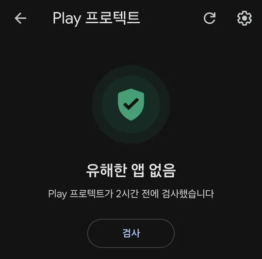
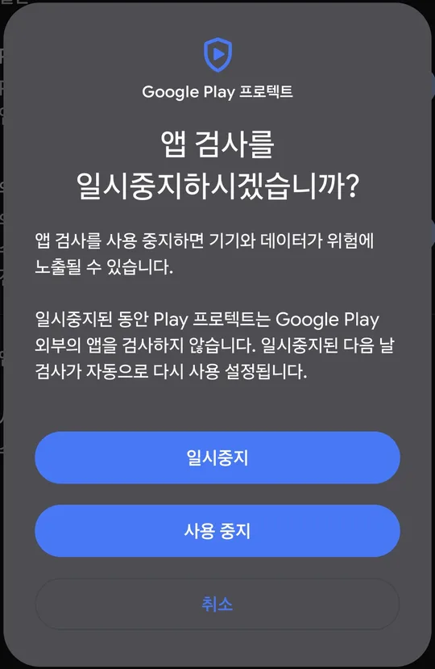
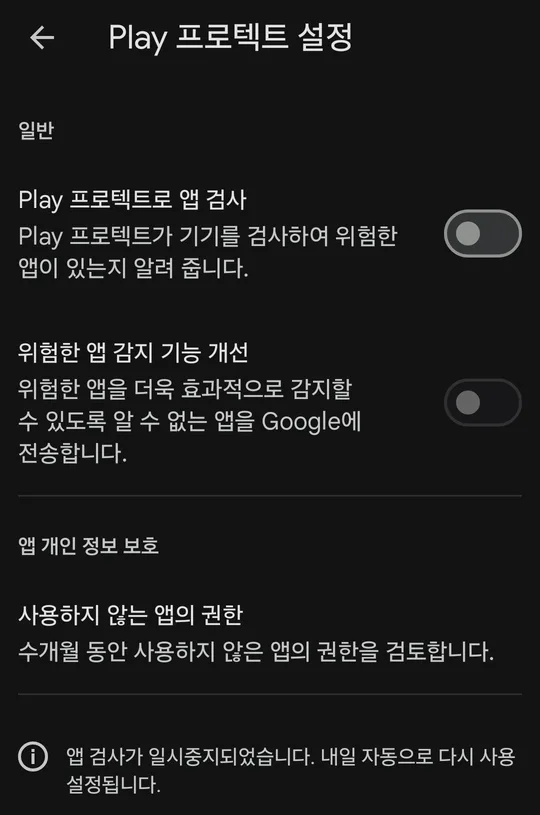
단톡방에 올라오는 링크를 눌러 파일을 받고, 다 받으면 「열기」를 눌러요. 브라우저가 「이 출처 허용」을 물으면 켜고 돌아와요.
APK 받기「이 앱을 설치하시겠습니까?」 → [설치]. 「출처를 알 수 없는 앱 설치」가 뜨면 [무시하고 설치].
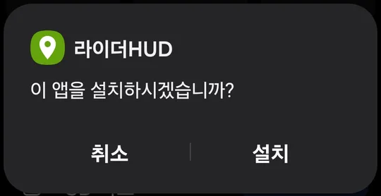
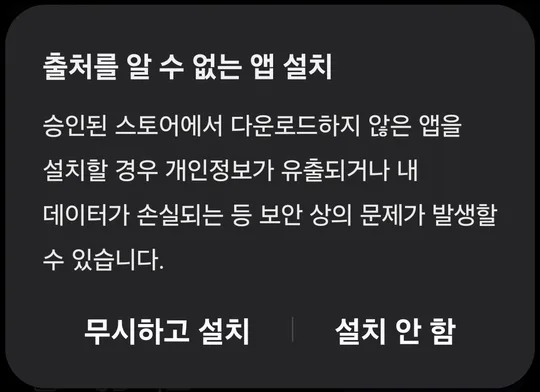
「기기 보호를 위해 앱 차단됨」이 뜨면 [확인] → 1번 화면에서 앱 검사가 꺼져 있는지 보고 → 내 파일 → 다운로드에서 받은 파일을 다시 눌러 설치해요.
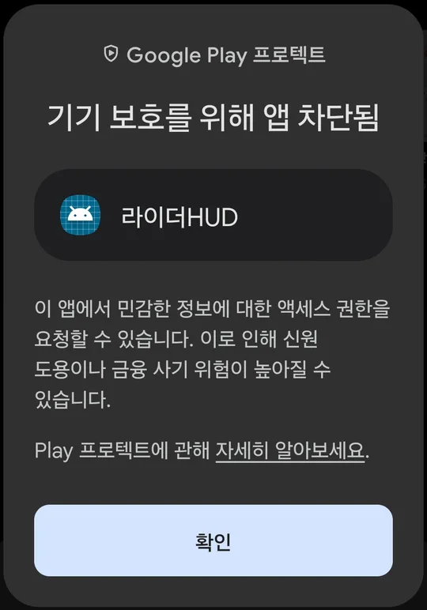
앱을 열면 화면 읽기를 켜는 곳으로 안내해요. 설정 → 접근성 → 설치된 앱 → 라이더HUD 화면 읽기 → 켜기.
「제한된 설정」이라며 켜지지 않으면 — [확인] → 설정 → 애플리케이션 → 라이더HUD → 오른쪽 위 ⋮ → 제한된 설정 허용 → 다시 켜요.
「전체 제어 권한 허용」이 뜨면 [허용]. 라이더HUD는 콜 화면을 읽기만 하고, 수락 · 거절을 대신 누르지 않아요.
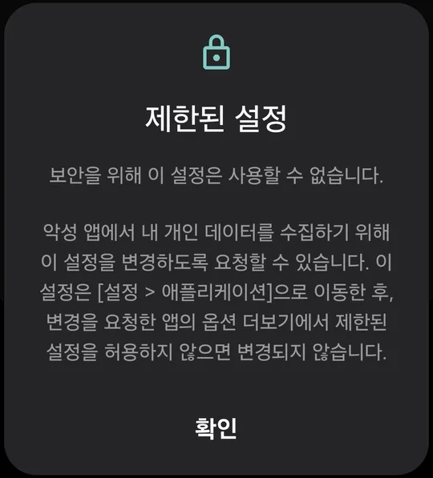
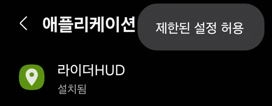
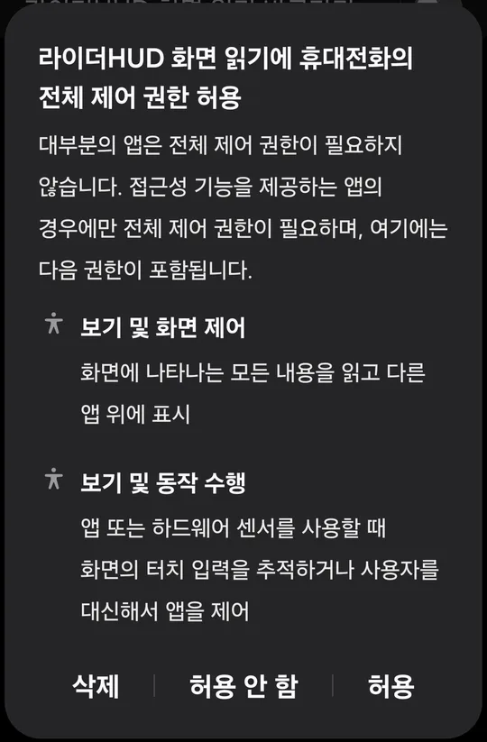
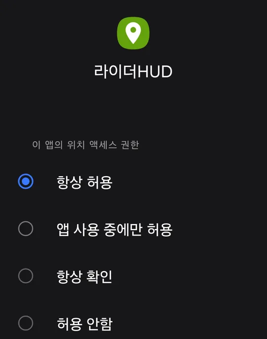
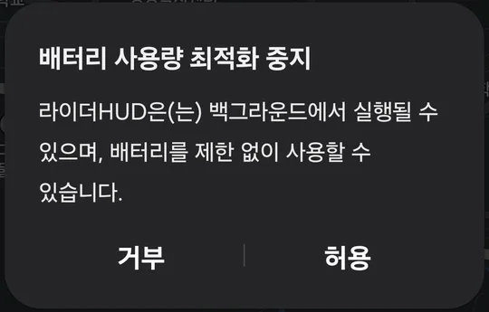
설치가 끝나면 1번 화면으로 돌아가 「Play 프로텍트로 앱 검사」를 다시 켜 주세요. 다시 켜지 않아도 다음 날 저절로 켜지지만, 설치 후 바로 다시 켜기를 권장해요.
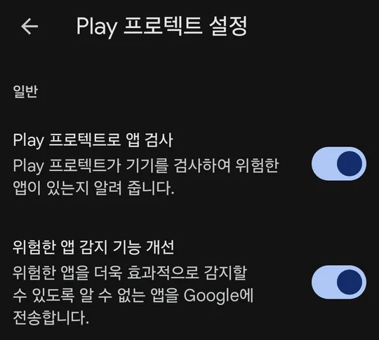
라이더HUD는 콜을 대신 받거나 거절하지 않고, 배달 앱 버튼을 대신 누르지도 않아요. 화면에 보이는 글자를 읽기만 하고, 배민 · 쿠팡 아이디나 비밀 정보도 묻지 않아요. 받을지 말지는 언제나 라이더가 정해요.
아니요. 고객 주소 · 연락처 · 요청사항은 적지도, 밖으로 보내지도 않아요. 달린 길 · 수입 같은 운행 기록은 내 폰에만 저장돼요. 서버에는 요금 계산과 앱 고치기에 필요한 것(하루 정산 확인 건수 · 앱 버전 · 오류)만 보내요. 자세한 것은 개인정보 처리방침에 있어요.
위치를 계속 쓰기 때문에 배터리를 조금 더 써요. 거치대에서 충전하면서 쓰시는 걸 권해요.
안드로이드 전용이에요. 아이폰에서는 라이더HUD 웹앱을 계속 쓰실 수 있어요.
탄 만큼 내는 건당과 월 정액 중에서 골라요. 출시 기념가(2027년 12월 31일까지)는 건당 20원 · 월 정액 10,000원이에요. 2027년 1월 31일까지는 누구나 무료이고, 행사가 끝나도 설치 후 첫 달은 무료예요(1월 31일 전에 설치하면 2월 28일까지). 친구 소개 1명당 한 달 더, 제한 없이 쌓여요.
설치하다 막히면 단톡방에 남겨 주세요. 개발자가 직접 답해요. 쓰는 법은 사용법에 있어요.
막혔어요 → 카톡으로 물어보기 riderhud.com 홈으로